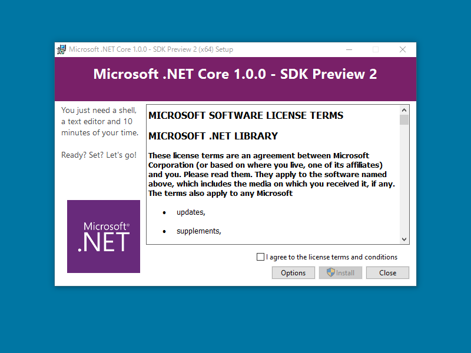
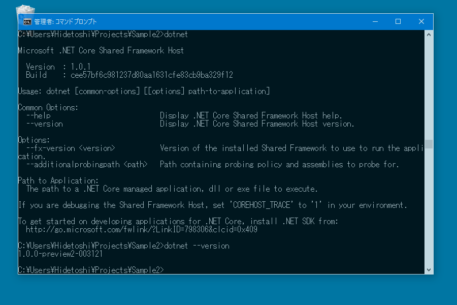
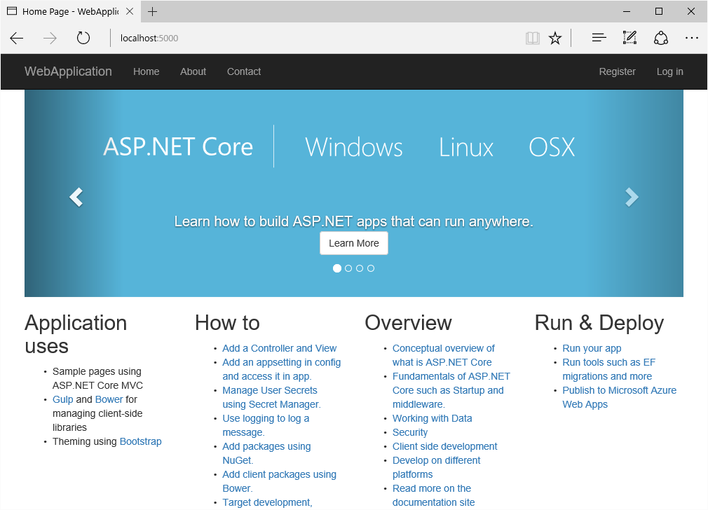
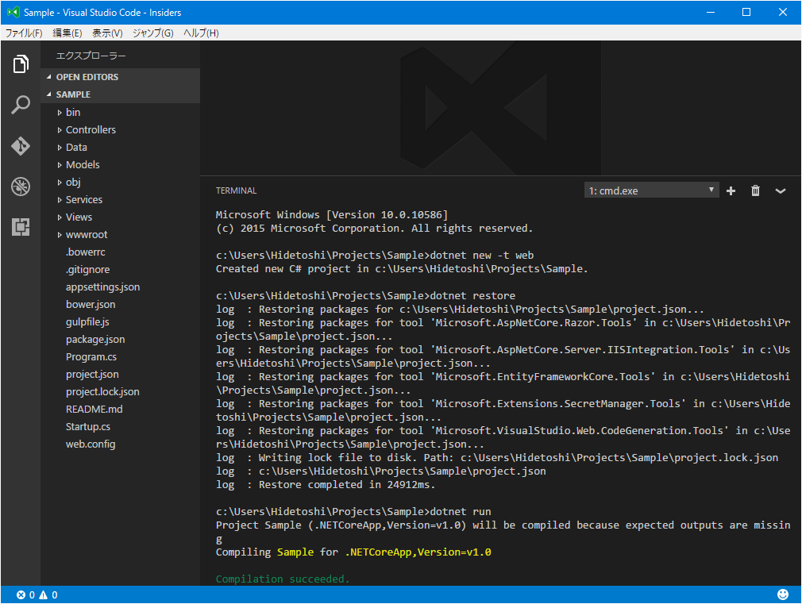

ASP.NET Core なるものを Visual Studio Code でしてみむとするなり（2）
公開日：
.NET Core SDK for Windows のインストール

.NET Core SDK Installer をダウンロードしてインストールする。
これで dotnet コマンドが利用できるようになる。

プロジェクトの作成と実行
今回は %USERPROFILE%\Projects にサンプルというプロジェクトを作成する。
プロジェクトフォルダーの作成と移動
C:\Users\Hidetoshi\Projects>mkdir SampleC:\Users\Hidetoshi\Projects>cd Sample
プロジェクトの作成 dotnet new -t web
C:\Users\Hidetoshi\Projects\Sample>dotnet new -t web Created new C# project in C:\Users\Hidetoshi\Projects\Sample.
これで generator-aspnet で言うところの Web Application -> Bootstrap に相当するものが作成されるみたい。
ちなみに dotnet new のオプションを指定しないと、コンソールアプリのひな型が作成されるのかな？ ほかのオプションはこんな感じ。
dotnet new コマンド | Microsoft DocsOptions
-l, --lang [C#|F#]
Language of the project. Defaults to C#. csharp (fsharp) or cs (fs) are also valid options.
-t, --type
Type of the project. Valid values are console, web, lib and xunittest.
言語とかも指定できるんだなぁ。
プロジェクトの復元 dotnet restore
足りないパッケージを取得する。
C:\Users\Hidetoshi\Projects\Sample>dotnet restore log : Restoring packages for C:\Users\Hidetoshi\Projects\Sample\project.json... log : Restoring packages for tool 'Microsoft.AspNetCore.Razor.Tools' in C:\Users\Hidetoshi\Projects\Sample\project.json... log : Restoring packages for tool 'Microsoft.AspNetCore.Server.IISIntegration.Tools' in C:\Users\Hidetoshi\Projects\Sample\project.json... log : Restoring packages for tool 'Microsoft.EntityFrameworkCore.Tools' in C:\Users\Hidetoshi\Projects\Sample\project.json... log : Restoring packages for tool 'Microsoft.Extensions.SecretManager.Tools' in C:\Users\Hidetoshi\Projects\Sample\project.json... log : Restoring packages for tool 'Microsoft.VisualStudio.Web.CodeGeneration.Tools' in C:\Users\Hidetoshi\Projects\Sample\project.json... log : Writing lock file to disk. Path: C:\Users\Hidetoshi\Projects\Sample\project.lock.json log : C:\Users\Hidetoshi\Projects\Sample\project.json log : Restore completed in 25830ms.
プロジェクトの実行 dotnet run
C:\Users\Hidetoshi\Projects\Sample>dotnet run Project Sample (.NETCoreApp,Version=v1.0) will be compiled because expected outputs are missing Compiling Sample for .NETCoreApp,Version=v1.0Compilation succeeded. 0 Warning(s) 0 Error(s)
Time elapsed 00:00:02.6031974
http://localhost:5000 へアクセスするとアプリケーションが表示される。

［Ctrl］＋［C］キーで中断できる。

Visual Studio Code だとプロジェクトフォルダーを開いてターミナル画面を開き、dotnet コマンドをポポンと打てば実行できる。Git もそのまま使える。ぃぇーい！
前回より簡単な感じなので、こっち使おうかな？